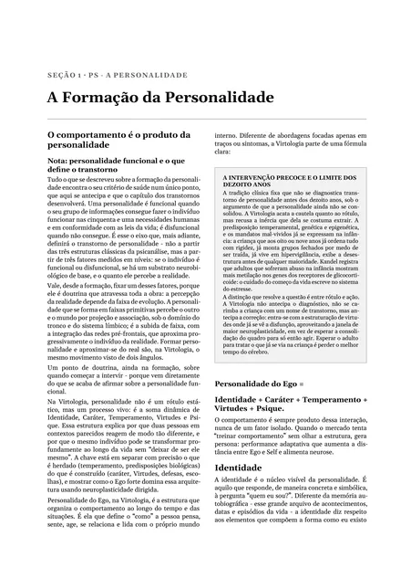
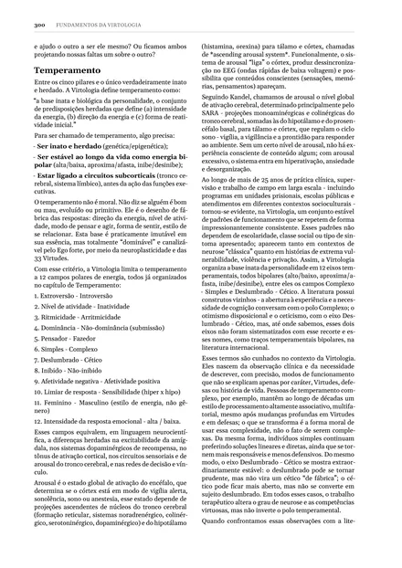
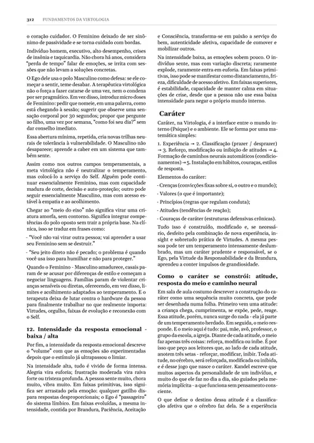

O que será abordado
Na aula, o Dr. Eduardo Casarotto passa por cada um destes pontos. Aqui vai um resumo do que você vai ver. Na aula ao vivo, cada um ganha exemplos e casos.
1A violência que o terapeuta não percebe
Não é maldade. Na maioria das vezes, é a melhor das intenções aplicada no lugar errado. A violência acontece de dois jeitos:
O terapeuta propõe que a pessoa seja algo que a personalidade dela não comporta. Pede, por exemplo, que um pensador resolva tudo fazendo.
A direção pode até estar certa, mas chega rápido e pesada demais para a estrutura que a pessoa tem hoje.
Nos dois casos, a pessoa sai da sessão com a sensação de que, do jeito que é, está errada.

Fundamentos da Virtologia, p. 297Toque para ampliar2O que é fixo e o que é mutável
Personalidade do Ego =
Uma parte vem pronta: o temperamento, herdado. O resto se constrói ao longo da vida e continua mudando, porque o cérebro conserva neuroplasticidade a vida inteira.
Não existe terapia séria que tente transformar um pensador em fazedor. No temperamento, o que existe é a maturidade do traço. Já crenças, valores, atitudes e couraças do caráter podem ser modificados e, se necessário, desfeitos, sobretudo pela prática de virtudes.
Propor mudar o que é fixo é o primeiro jeito de violentar o paciente.

Fundamentos da Virtologia, p. 300Toque para ampliar3A máscara
Uma mudança verdadeira passa pelo mesmo caminho que formou a personalidade:
Quando o terapeuta incentiva o comportamento novo sem que esse registro aconteça, a pessoa, sem querer, cria uma máscara para agir daquele jeito. Ela não alterou a personalidade, só o comportamento, e passa a usar esse comportamento para esconder quem é de verdade.
Quando se tenta treinar o comportamento sem olhar a estrutura, o que se produz é persona: uma performance que afasta ainda mais a pessoa de quem ela é.
Se essa máscara continua e cresce, pode contribuir lá na frente para um transtorno de personalidade.

Fundamentos da Virtologia, p. 312Toque para ampliar4O terapeuta julgador
É comum o paciente ver o terapeuta como alguém que o está julgando, mesmo quando não é essa a intenção. A partir daí, sem perceber, ele muda a forma de estar na sessão:
A sessão vira mais um lugar onde ele precisa se defender. E essa máscara também faz mal a ele.
Diz o que a pessoa deveria ser. Corrige, cobra, compara. O paciente aprende a mostrar só o que vai ser aprovado.
Lê a estrutura antes de propor, respeita o que é fixo e cria as condições para que a mudança aconteça de forma leve e natural.
5Como conduzir a análise
A Virtologia lê a pessoa por vários componentes ao mesmo tempo antes de escolher o que propor. Essa leitura responde às perguntas que separam a ajuda da violência:
A mudança que se sustenta é a que a pessoa consegue viver como dela, sem precisar de máscara.
A aula é gratuita, e você pode fazer suas perguntas diretamente a ele.
Inscreva-se gratuitamente